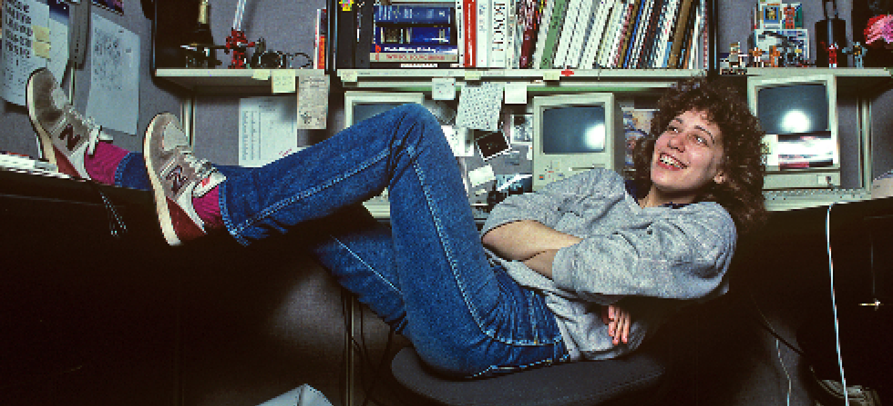
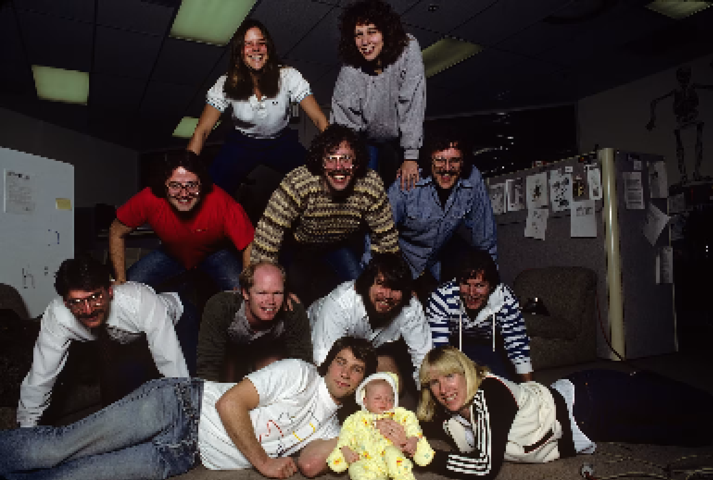

Experience
Apple Computer
1983–1986
Icon & Typeface Design
NeXT
1986–1987
Creative Director
Microsoft
1987-1990
Graphics Designer
Pinterest
2015–2021
Creative Director
Niantic Labs
2021–Present
Design Architect
Awards
2011 — Chrysler Design Award
2018 — AIGA Medal
2019 — Cooper Hewitt National Design Award for Lifetime Achievement
Collections
Museum of Modern Art (MoMA)
San Francisco MoMA
Susan Kare is a pioneering computer iconographer whose work defined the visual language of early personal computing.

Since 1983, she has designed thousands of software icons that have become universally recognizable. Built on a strict pixel grid, her work balances clarity, charm, and function.
With a Ph.D. in fine arts from New York University, Kare initially worked in the art world before joining Apple in 1982. There, she became the sole creator of screen graphics for the Macintosh.
Her lack of technical background became an advantage—allowing her to design for everyday users. She later worked with Steve Jobs at NeXT and went on to create her own studio.


Design Method
At that time there were no applications, so Kare bought a grid notebook and started with the design.The development team indicated what they needed and she developed the icons to adapt to the different functionalities. Its icons emerged from art history books, extravagant gadgets, toys or hieroglyphics. The first works that came to light was the first set of icons in the system. Among them was the Happy Mac’s icon that appeared on the initial screen, with the wastebasket, the clock, the pump and the file, application icons and files.
During her time at Apple, she finished shaping the user interface, giving it a universally attractive and intuitive visual lexicon. Instead of thinking of each image as a small illustration of a real object, she tried to design icons that were as instantly understandable as traffic signals.
A wristwatch to indicate that the team was performing an action and that we should wait. A paint pot for drawing applications. A bomb to warn us that something had gone wrong or the Command key, that imitated the cross of Saint Hannes, originally symbol of a “place of interest” in the 50’s in Finland. It later became a traffic signal in Scandinavia and was later used in Sweden to indicate an interesting place or tourist attraction.


Life After Apple
In 1985, after launching the first Macintosh, Steve Jobs was fired from Apple. He established his own computer company, NeXT Inc. and Susan Kare accompanied him as Creative Director. This gave her the opportunity to contract Paul Rand to design the corporate identity of the company.
A few years later, in 1988, in a bold move, Kare agreed to develop a job for the competition. She designed the outer shell of Microsoft’s Windows 3.0 operating system. Working with the Microsoft system presented a new challenge: the color. According to Kare, “I really enjoyed working for them. Different groups, different design challenges and a difference in the relative roles of marketing versus engineering. She adds, “I liked the challenges and opportunities that came from having 16 colors.”
Already in 1989, she founded her own studio: Susan Kare LLP, which she established in San Francisco. She continues designing interfaces and iconographies for diverse clients, big and small. Her projects are varied, from mail apps for smartphones, graphics for smartwatches, icons of all kinds and even a collection of decks and magazines for the Museum of Modern Art in New York. They try to solve the problems of the clients, delivering strong and masterfully elaborated works; “Sometimes we act directly with engineering, and sometimes through marketing. But we always put everything that is on our side to exceed expectations and give added value.“